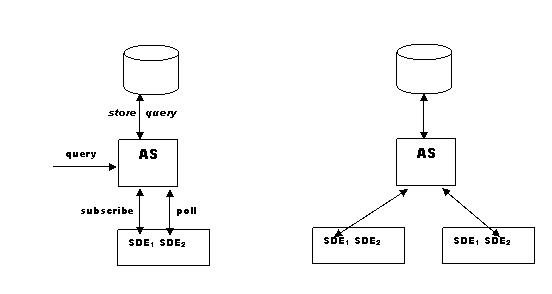

Globus > Toolkit > Documentation > 3.2 > Archive Service <
[need some info about the status of this service for 3.2 - it comes with xx and you can do yy with it??]
The Archive Service (AS) is a new proposed Grid Service designed to facilitate the preservation of Service Data history. That is, while the Index Servicereplaces existing data with newly received data, the AS will accumulate Service Data values over time, according to various optional storage management strategies. Because the Index Service stores only the latest data received, it can keep this data in memory and the data can be fairly rapidly recreated when the Index Service is restarted and begins to receive notifications and resumes its polling. The AS stores historical data and allows queries of this data, so it must store the archive in a persistent database, rather than solely in memory.
All Grid Services have the ability to expose Service Data, which is a collection of XML elements encapsulated as Service Data Elements (SDE). The packaging of each SDE includes a name that is unique to the Grid Service instance, a type, and time-to-live information that a recipient can use for lifetime management. The obligatory Grid Service interface defines a standard WSDL operation, FIndServiceData, for querying and retrieving SDE, which is used by clients or other Grid Services.
In addition to having the ability to query any Grid Service for Service Data, Grid Service A may Subscribe to any SDE of Grid Service B, and receive Notifications (governed by certain timing and frequency constraints) whenever that SDE changes value. In this case, the entire SDE value is delivered with the Notification.
In GT3, the Index Service aggregates data received from multiple sources through registered subscriptions and via configured periodic query polling. The data in the Index Service represents "current" information, as delivered to it, limited of course by information latency and rapidity of change. The Index Service exposes this aggregated data through its Service Data interface, allowing other services and users, for example, to query for currently available and under-utilized grid resources.
At the highest level, this diagram conveys AS deployment options:

The AS has flexible mechanisms for data acquisition (subscription and polling) and for storage strategy.
While the AS has many similarities to the WS Index Service, especially concerning its acquisition and aggregation of data, the distinguishing characteristics of the AS is the storage of historic data in a persistent database.